How to store sensor data into a MySQL database using Node-Red
Description
Node-RED is a programming tool for wiring together hardware devices, APIs and online services in new and interesting ways. It provides a brower-based editor that makes it easy to wire together flows using the wide range of nodes in the palette that can be deployed to its runtime in a single-click.This article will explain how to save sensot data into MySQL database using Node-Red.
Requirement
1. Any Milesight device with node-red embedded can be used. Here, we will use the UG65 gateway as an example.
2. Employ a MySQL database, version 5.6.34 or above, ensuring its seamless functionality.
3. Ensure successful network integration of one or many LoRaWAN devices with the UG65, transmitting data consistently. Here, we exemplify the UC501 LoRaWAN device.
Configuration
1. Device Internet Connectivity
Firstly, ensure that your UG65 gateway device is capable of connecting to the internet. For specific instructions.
Please refer to the following link: How to Connect Milesight Gateway to the Internet
2. Access the Node-RED Dashboard
Typically, navigate to https://[Your_Device_IP_Address]/node-red, and log in using the admin credentials.
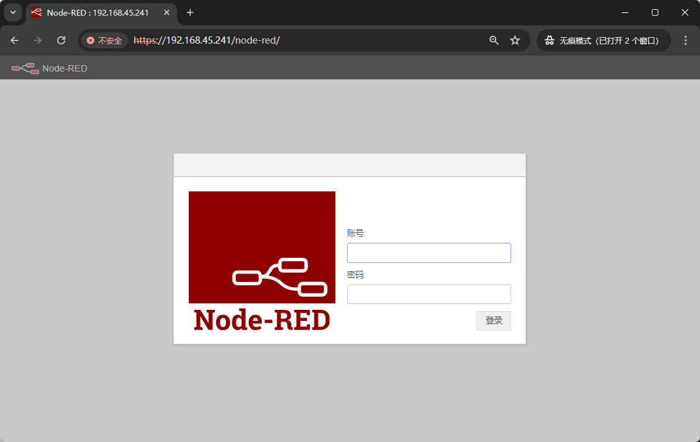
3. Plugin Installation Procedure
Navigate to the "Manage palette" option in the Node-RED menu bar.
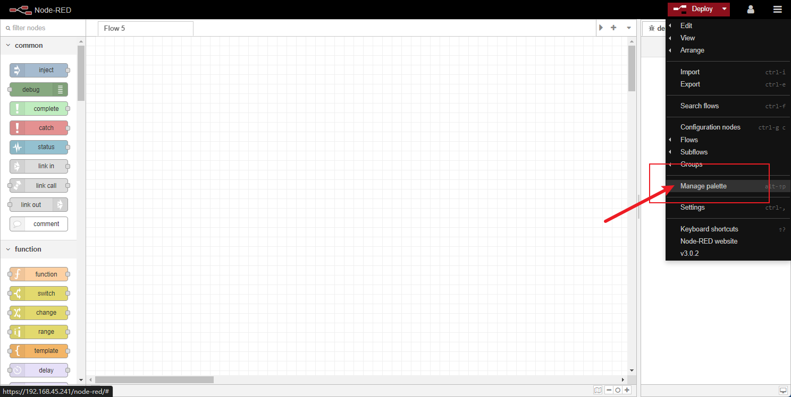
Search for the MySQL plugin, specifically, "node-red-node-mysql".
Click on "install" and allow approximately 3-5 minutes for the system to execute the installation process automatically.
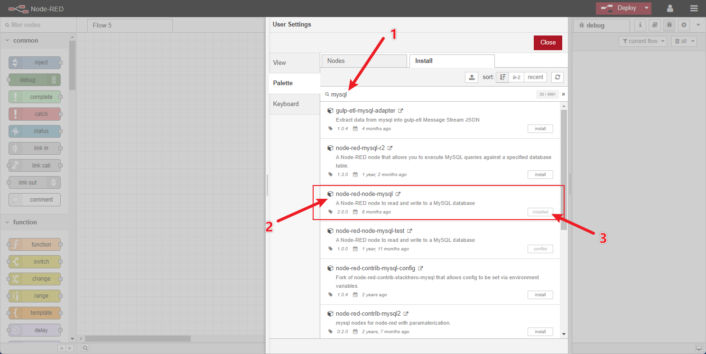
Upon completion, verify the presence of the plugin by typing "mysql" into the plugin search bar.
If the plugin is not visible, consider restarting your gateway device for optimal functionality.
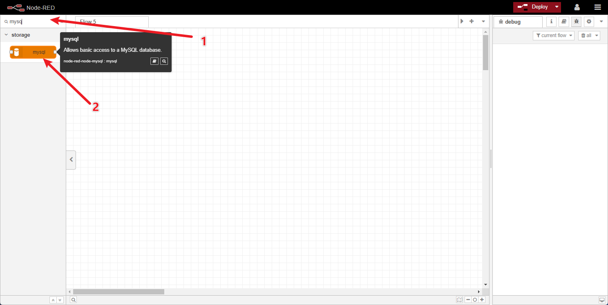
4. Database Preparation
Prepare the database in accordance with the specific scenario, such as the utilization of UC501 sensors in this instance.
Log in to your MySQL database and execute the following statement to create the database.
CREATE DATABASE milesight_db CHARACTER SET utf8mb4 COLLATE utf8mb4_unicode_ci;
Then create the database table with the following SQL statements.
CREATE TABLE t_sensor_uc_501_data (
row_id INT AUTO_INCREMENT PRIMARY KEY,
gpio_1 VARCHAR(10) DEFAULT 'no data',
gpio_2 VARCHAR(10) DEFAULT 'no data',
adc_1 INT DEFAULT 0,
adc_1_min INT DEFAULT 0,
adc_1_max INT DEFAULT 0,
adc_1_avg INT DEFAULT 0,
adc_2 INT DEFAULT 0,
adc_2_min INT DEFAULT 0,
adc_2_max INT DEFAULT 0,
adc_2_avg INT DEFAULT 0,
rec_ts TIMESTAMP DEFAULT CURRENT_TIMESTAMP
) AUTO_INCREMENT=0;
Ensure alignment between the predefined data structure and the configuration within Node-RED to prevent any potential data insertion errors.
5. Flow Creation
Follow these steps to create the flow sequence:
Begin by adding a "LoRa Input" node (rename it to "LoRa Data Input").
Next, include a "Device Filter" node (rename it to "Get data from UC501-868M device").
Integrate two "Function" nodes (rename them to "Decode sensor data" and "Generate SQL commands" respectively).
Lastly, incorporate a "MySQL" node plugin (rename it to "MySQL Connector Node"). Ensure proper configuration of connections between the plugins, adhering to the diagram provided below.
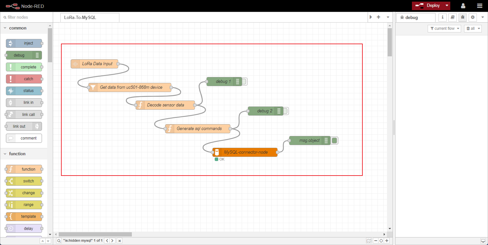
Next, let's go through the specific configurations of each plugin:
1) LoRa Data Input: This serves as the entry point for all LoRaWAN data streams mounted on gateway devices.
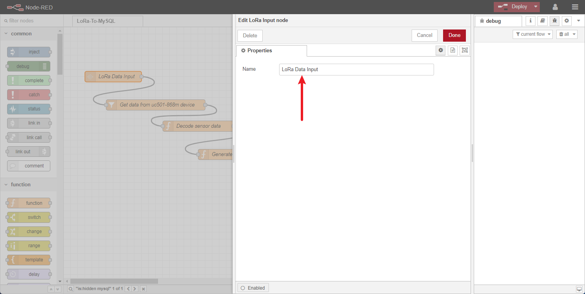
2) Get data from UC501-868M device: Filters data streams from your desired devices using their Device EUIs.
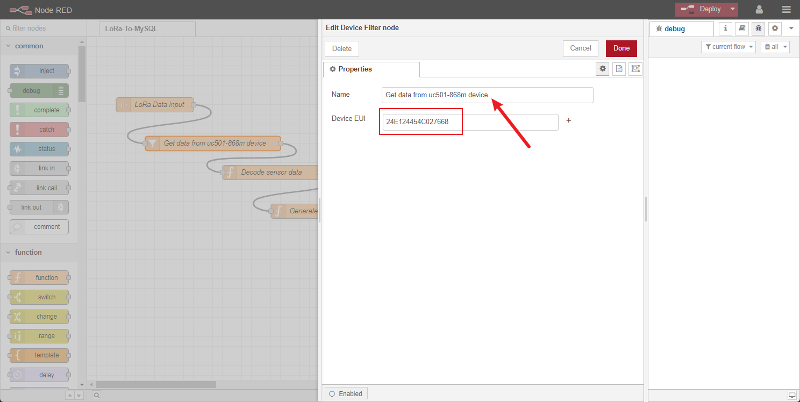
3) Decode sensor data: Write decoder code specific to your devices to decode the data. If your LoRaWAN devices are products of Milesight, you can generally obtain the decoder code from Milesight IoT Sensor Decoders.
However, you'll need to modify the code syntax into TypeScript format for use in Node-RED.
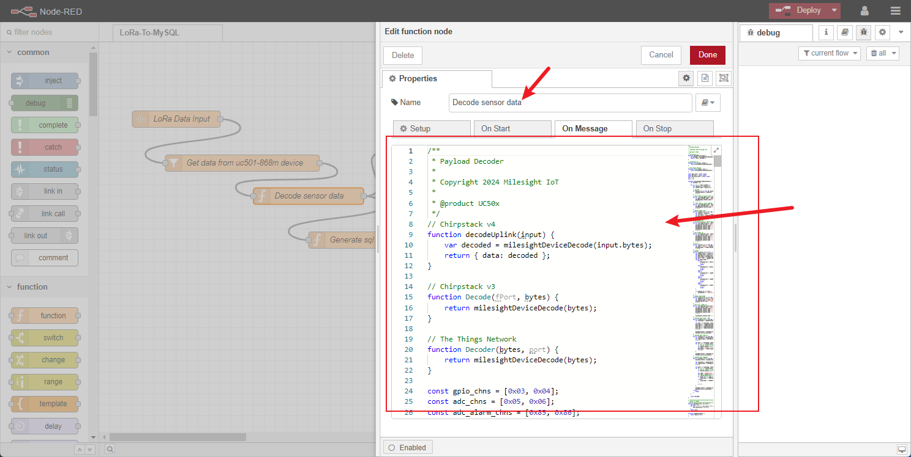
4) Generate SQL commands: This plugin is pivotal in the entire flow. Here, you can assemble SQL statements as needed, keeping only the fields you want to insert into the database and deleting those you don't need. For instance, in the case shown in the diagram, I don't need "modbus_chn_1_alarm" and "modbus_chn_2_alarm", so I can refer to the code example and delete them.
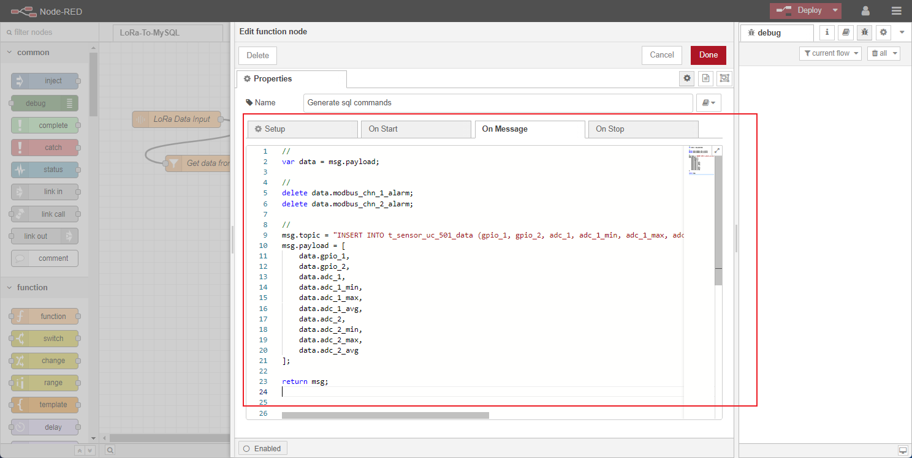
var data = msg.payload;
delete data.modbus_chn_1_alarm;
delete data.modbus_chn_2_alarm;
msg.topic = "INSERT INTO t_sensor_uc_501_data (gpio_1, gpio_2, adc_1, adc_1_min, adc_1_max, adc_1_avg, adc_2, adc_2_min, adc_2_max, adc_2_avg) VALUES (?, ?, ?, ?, ?, ?, ?, ?, ?, ?)";
msg.payload = [
data.gpio_1,
data.gpio_2,
data.adc_1,
data.adc_1_min,
data.adc_1_max,
data.adc_1_avg,
data.adc_2,
data.adc_2_min,
data.adc_2_max,
data.adc_2_avg
];
return msg;
5) MySQL Connector Node: This is the critical node for the entire flow. During the initial setup, you need to configure the connection details for your target MySQL database, including the database address, port number, username, password, database name, and character set. It is important to note that this configuration is required only during the first setup.
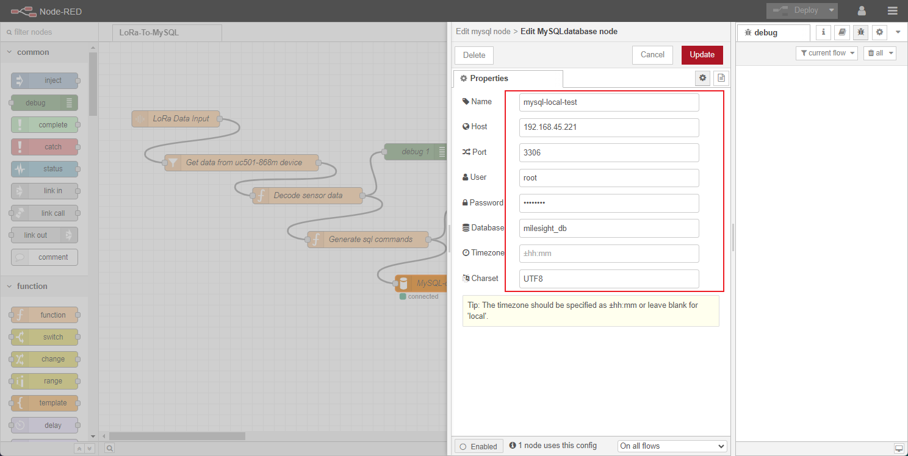
For subsequent uses, you can simply select the previously configured settings from a dropdown menu, without re-entering the database parameters each time.
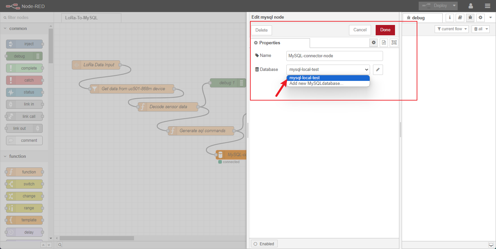
6. Start the Flow Process and Check the Data
After configuring the parameters for all the nodes above, click "Deploy" in the upper right corner.
The flow process will start automatically. Observe the log output of the debug plugin to check if there are any errors in the previous configuration.
Generally, the log prompts are as follows:
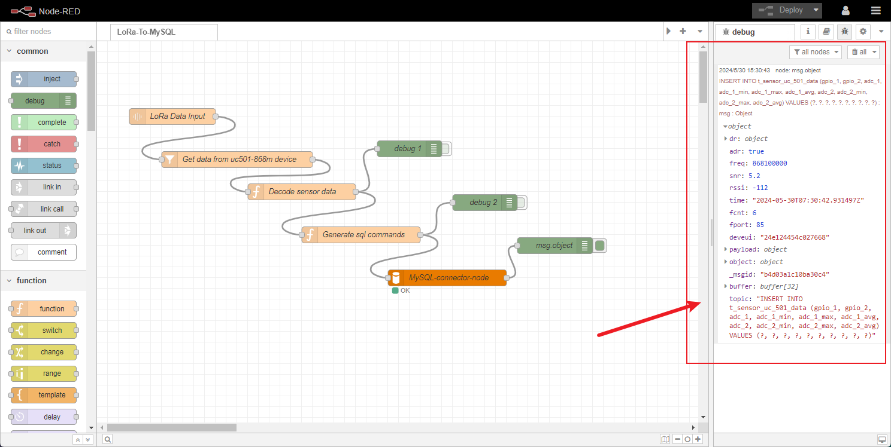
Next, use a database connection tool or command-line interface to connect to the MySQL database and verify that the data has been correctly imported.
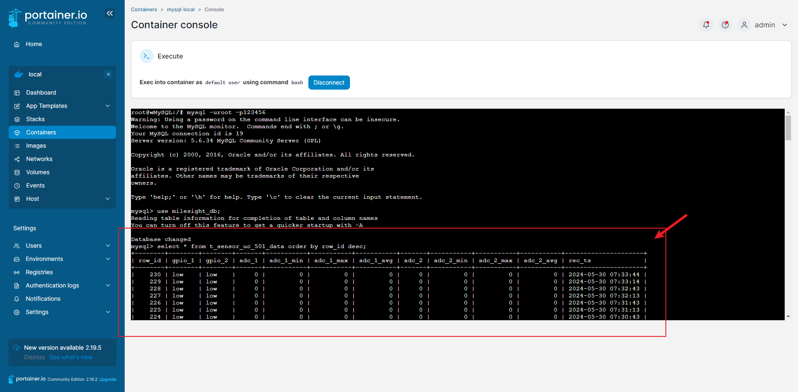
Upon inspection, we can confirm that the sensor data has been automatically stored in the database.
This concludes our tutorial on storing sensor data in a database.
For your convenience, I will export the backup file of the flow process used in this demonstration as a text file and attach it at here. This will allow readers to import it into the Node-RED system for their own use.
Frequently Asked Questions
Question 1:
Hello, my database version is different from yours. Can I still use this guide as a reference?
Answer 1:
Yes, you can. While there are differences between major MySQL versions, such as case sensitivity for table names and field type definitions, you will need to make specific adjustments based on your version. This article provides a comprehensive overview of the entire process, but you should modify the relevant SQL statements to suit your actual situation.
Question 2:
Hello, I am unable to install the MySQL plugin for Node-RED. How should I proceed?
Answer 2:
Installing plugins for Node-RED requires an internet connection. Please ensure that your device is connected to the internet. For detailed troubleshooting steps, please refer to the guide at Milesight Support and follow the instructions provided.